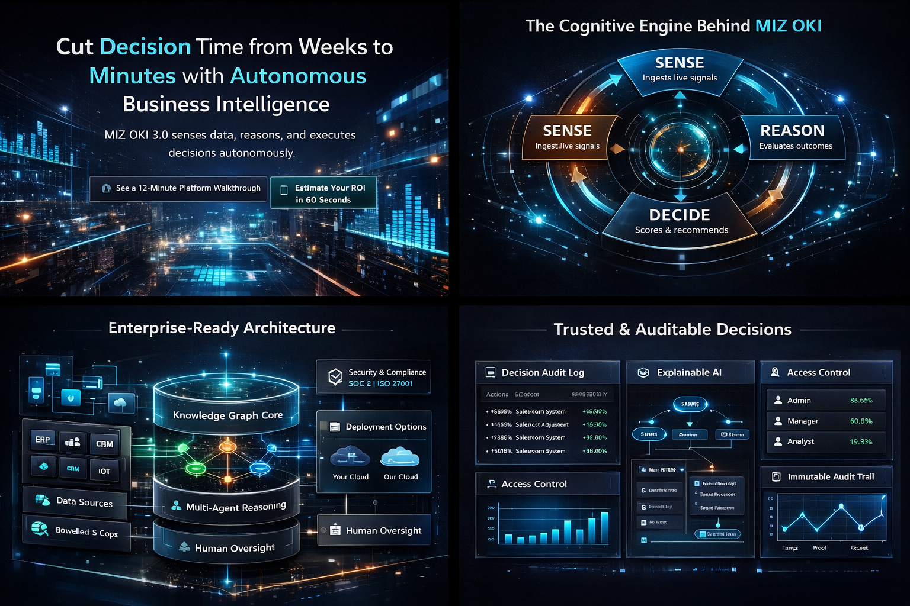

Investor Overview
Verifiable autonomous decision intelligence. Outcome-first framing designed for diligence and board contexts.
Core thesis
"Decisions verified before execution—not explained after failure." MIZ OKI 3.5 is the first Business General Intelligence platform where autonomous agents propose, but the Decision Control Plane authorizes. No black-box autonomy.
The SRDPV-DAL Pipeline (Patent Pending)
Seven-stage autonomous intelligence loop with built-in validation and governance.
SENSE → REASON → PLAN → VALIDATE → DECIDE → ACT → LEARN
Impact snapshot
| Metric | Typical Impact |
|---|---|
| Decision latency | ↓ 50–75× |
| Revenue leakage | ↓ 18–35% |
| Operational cost | ↓ 22–41% |
| Payback period | ~3.2 months |
| Automation coverage | Up to 89% |
Key differentiators
Decision Control Plane
Centralized authority for all autonomous proposals. Agents cannot bypass the DCP.
Validation Layer
Independent agents challenge every proposal. Disagreement is signal, not error.
Counterfactual Simulation
Test alternatives before execution. Learn without real-world risk.
Quantum-Resistant Security
CRYSTALS-Kyber + Dilithium. Future-proof cryptography.
